Theory#
Please note this page is sourced, and lightly edited from the original model documentation within
the WISDEM repository. As such, these scaling relationships are the basis of the CSMBase and
NLR2015Land models. For any later models with differing scaling relationships, in-depth
documentation is forthcoming.
The theory for the models in this software are based directly on the work described in references [Fingersh et al., 2005, Harrison and Jenkins, 1993, Malcolm and Hansen, 2006, Maples et al., 2010]. This section provides an overview of these simple mass and cost models for the major turbine components.
The NREL Cost and Scaling Model [Fingersh et al., 2005] provides a simple cost and sizing tool to estimate wind turbine component masses and costs based on a small number of input parameters such as rotor diameter, hub height and rated power. The model was developed over several results following the Wind Partnerships for Advanced Component Technology (WindPACT) work that occurred between roughly 2002 to 2005. The original form of the cost model was based on an earlier model from 1993 out of the University of Sunderland (the Sunderland Model) [Harrison and Jenkins, 1993]. The Sunderland Model created a set of wind turbine models to estimate the mass and cost of all major wind turbine components including: blade, hub system [hub, pitch system, and nose cone], nacelle [low speed shaft, main bearings, gearbox, high speed shaft/mechanical brake, generator, variable speed electronics, electrical cabling, mainframe [bedplate, platforms and railings, base hardware, and crane], HVAC system, controls, and nacelle cover], and tower. The Sunderland model was based on a set of semi-empirical models for each component which estimated design loads at the rotor, propagated these loads through the entire system, and used the loads to estimate the size of each component calibrated to data on actual turbines in the field during that time. Cost estimates were then made on a per weight basis using a multiplier again based on field data or industry sources.
To arrive at the NREL Cost and Scaling Model, the WindPACT studies began in many cases with the Sunderland model and updated the results with new coefficients or, in some cases, with entirely new cost equations based on curve fits of key design parameters (rotor diameter, etc) to the results of detailed design studies [Malcolm and Hansen, 2006]. In addition, the WindPACT work established estimates of costs associated with balance of station and operations and maintenance for a fictitious wind plant in North Dakota which led to an overall cost of energy model for a wind plant. The key cost of energy equation for a wind plant is given in the NREL Cost and Scaling Model [Fingersh et al., 2005] as:
where \(COE\) in this equation is a simple estimate of a wind plant cost of energy, \(FCR\) is the fixed charge rate for the project, \(BOS\) are the total balance of station costs for the project, \(TCC\) are the total turbine capital costs for the project, \(AEP\) is the annual energy production for the project, \(LLC\) are the annual land-lease costs, \(LRC\) is the levelized replacement cost for major part replacement, \(tr\) is the tax rate, and \(OM\) are the annual operations and maintenance costs which are tax deductible.
While the NREL Cost and Scaling Model improved the overall cost estimation for larger turbines on the order of 1 MW+, it abstracted away from the engineering analysis foundations of the original Sunderland model. This is depicted in the below figure where it can be seen that the engineering-analysis has been replaced by a series of curve fits which relate a small number of design parameters to mass and cost estimates for major wind turbine components.
.. _NRELCSM:
{kind=link}
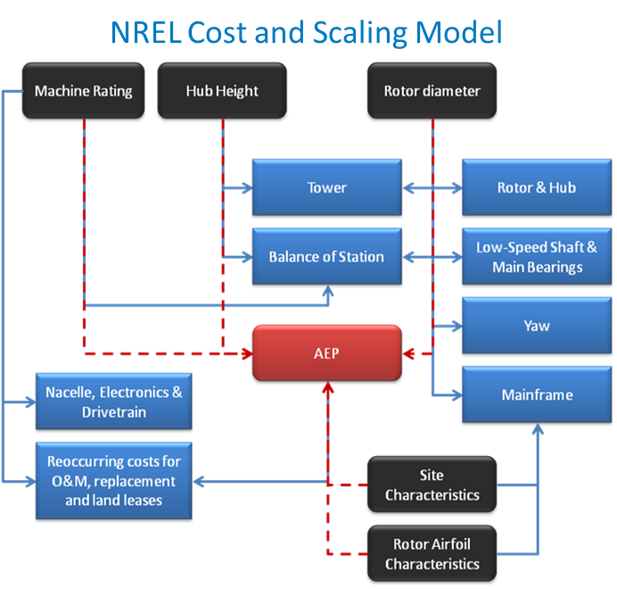
Fig. 1 NREL Cost and Scaling Model Key Input-Output Relationships. TODO: REFRESH GRAPHIC#
The resulting NREL Cost and Scaling Model (as provided in NREL_CSM_TCC) allows for a variety of
interesting analyses including scaling of conventional technology from under a MW to 5 MW+,
assessing impact of trends in input factors for materials and labor on wind plant cost of energy,
etc. However, it does not preserve the underlying engineering relationships of the original
Sunderland model and thus loses some fidelity of assessing how design changes may impact syste
costs.
The goal of the development of the second model, Turbine_CostsSE, then is to provide a set of
mass-based component cost calculations. A mass-cost model is developed for each of the major
turbine components. These use the data underlying the NREL Cost and Scaling Model to estimate
relationships that can then be scaled based on economic multipliers as done in [Fingersh et al., 2005].
Details of the models are described next.
TODO
The equation for blade costs includes both materials and manufacturing.
Blades#
To obtain the blade mass in kilograms and cost in USD from the rotor diameter in meters,
Where \(D_{rotor}` is the rotor diameter and \)b` is determined by:
If turbine class I and blade DOES have carbon fiber spar caps, \(b=2.47\)
If turbine class I and blade DOES NOT have carbon fiber spar caps, \(b=2.54\)
If turbine class II+ and blade DOES have carbon fiber spar caps, \(b=2.44\)
If turbine class II+ and blade DOES NOT have carbon fiber spar caps, \(b=2.50\)
User override of exponent value
For variable names access to override the default values see the :ref:csmsource.
The mass scaling relationships are based on the following data,
{kind=link}
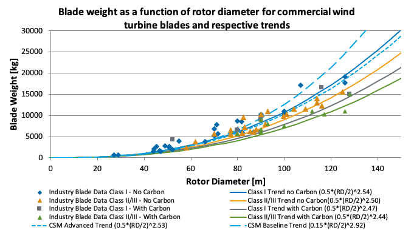
Hub (Shell)#
To obtain the hub shell mass in kilograms and cost in USD from the blade mass in kilograms,
For variable names access to override the default values see the :ref:csmsource.
The mass scaling relationships are based on the following data,
{kind=link}
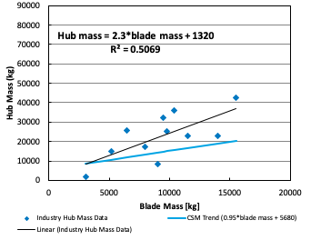
Pitch System#
To obtain the pitch bearing and system mass in kilograms and cost in USD from the blade mass in kilograms,
Where \(n_{blade}\) is the number of blades, \(h\) is fractional mass of the pitch bearing housing.
For variable names access to override the default values see the :ref:csmsource.
Spinner (Nose Cone)#
To obtain the spinner (nose cone) mass in kilograms and cost in USD from the rotor diameter in meters,
For variable names access to override the default values see the :ref:csmsource.
The mass scaling relationships are based on the following data,
{kind=link}
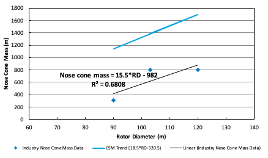
Low Speed Shaft#
To obtain the low speed shaft mass in kilograms and cost in USD from the blade mass in kilograms and the machine rating in megawatts,
Where \(P_{turbine}\) is the machine rating.
For variable names access to override the default values see the :ref:csmsource.
The mass scaling relationships are based on the following data,
{kind=link}
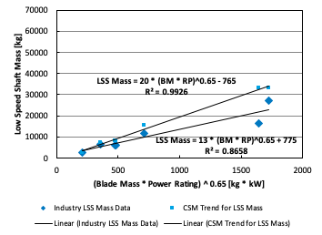
Main Bearings#
To obtain the main bearings mass in kilograms and cost in USD from the rotor diameter in meters,
Where \(D_{rotor}\) is the rotor diameter and \(n_{bearing}\) is the number of bearings. For
variable names access to override the default values see the :ref:csmsource. The mass scaling
relationships are based on the following data,
{kind=link}
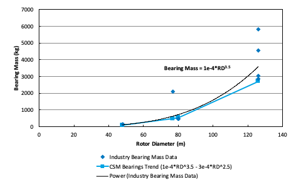
Gearbox#
To obtain the main bearings mass in kilograms and cost in USD from the rotor torque in kilo-Newton meters,
Where \(Q_{rotor}\) is the rotor torque in kilo-Newton meters and is approximated by,
Where \(P_{turbine}\) is the machine rating in kilowatts, \(D_{rotor}\) is the rotor diameter in meters, \(V_{tip}\) is the max tip speed in meters per second, and \(\eta\) is the drivetrain efficiency (as a fraction between zero and one).
For variable names access to override the default values see the :ref:csmsource.
The mass scaling relationships are based on the following data,
{kind=link}
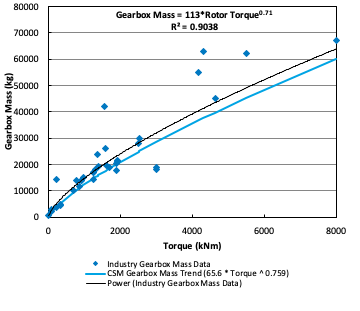
Brake#
To obtain the brake mass in kilograms and cost in USD from the rotor torque in kilo-Newton meters (updated in 2020 by J. Keller)),
Where \(Q_{rotor}\) is the rotor torque and is approximated above.
For variable names access to override the default values see the :ref:csmsource.
High Speed Shaft#
To obtain the high speed shaft mass in kilograms and cost in USD from the machine rating in megawatts,
Where \(P_{turbine}\) is the machine rating.
For variable names access to override the default values see the :ref:csmsource.
Generator#
To obtain the generator mass in kilograms and cost in USD from the machine rating in kilowatts,
Where \(P_{turbine}\) is the machine rating.
For variable names access to override the default values see the :ref:csmsource.
The mass scaling relationships are based on the following data,
{kind=link}
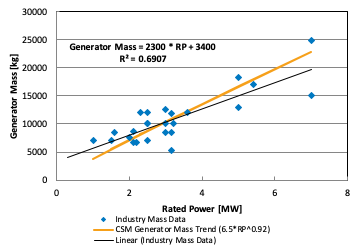
Yaw System#
To obtain the yaw system mass in kilograms and cost in USD from the rotor diameter in meters,
Where \(D_{rotor}\) is the rotor diameter.
For variable names access to override the default values see the :ref:csmsource.
Hydraulic Cooling#
To obtain the hydraulic cooling mass in kilograms and cost in USD from the machine rating in megawatts,
Where $P_{turbine}` is the machine rating.
For variable names access to override the default values see the :ref:csmsource.
Transformer#
To obtain the transformer mass in kilograms and cost in USD from the machine rating in kilowatts,
For variable names access to override the default values see the :ref:csmsource.
The mass scaling relationships are based on the following data,
{kind=link}
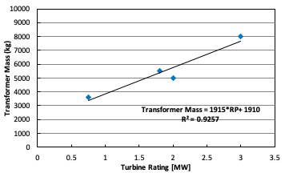
Cabling and Electrical Connections#
To obtain the cabling and electrical connections cost in USD (there is no mass calculated) from the machine rating in megawatts,
Where \(P_{turbine}\) is the machine rating.
For variable names access to override the default values see the :ref:csmsource.
Control System#
To obtain the control system cost in USD (there is no mass calculated) from the machine rating in megawatts,
Where \(P_{turbine}\) is the machine rating.
For variable names access to override the default values see the :ref:csmsource.
Other Nacelle Equipment#
To obtain the nacelle platform and service crane mass in kilograms and cost in USD from the bedplate mass in kilograms,
Note that the service crane is optional with a flag set by the user.
For variable names access to override the default values see the :ref:csmsource.
Bedplate#
To obtain the bedplate mass in kilograms and cost in USD from the rotor diameter in meters,
Where \(D_{rotor}\) is the rotor diameter. The mass scaling relationships are based on the following data,
{kind=link}
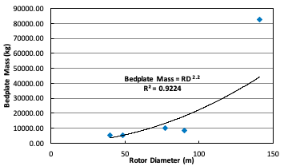
For variable names access to override the default values see the :ref:csmsource.
Nacelle Cover#
To obtain the nacelle cover mass in kilograms and cost in USD from the machine rating in kilowatts,
Where \(P_{turbine}\) is the machine rating.
For variable names access to override the default values see the :ref:csmsource.
Tower#
To obtain the tower mass in kilograms and cost in USD from the tower length in meters,
Where \(L_{tower}\) is the hub height for onshore turbines and the distance from transition piece to hub height offshore.
For variable names access to override the default values see the :ref:csmsource.
The mass scaling relationships are based on the following data,
{kind=link}
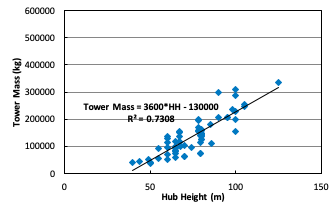
Sub-System Aggregations#
There are further aggregations of the components into sub-systems, at which point additional costs and/or multipliers are included. For the mass accounting, this includes hub system mass, rotor mass, nacelle mass, and total turbine mass,
Hub System#
It is assumed that the hub system is assembled and transported as a one unit, thus there are additional costs at this level of aggregation,
Where conceptually, \(k\) is a transportation multiplier, \(kp\) is a profit multiplier, \(ko\) is an overhead cost multiplier, and \(ka\) is an assembly cost multiplier. By default, \(kt=kp=ko=ka=0\).
For variable names access to override the default values see the :ref:csmsource.
Rotor System#
The rotor mass and cost is aggregated for conceptual convenience, but it is assumed to b transported in separate pieces and assembled on-site, so there are no separate sub-system cost multipliers.
For variable names access to override the default values see the :ref:csmsource.
Nacelle#
It is assumed that the nacelle and all of its sub-components are assembled and transported as a one unit, thus there are additional costs at this level of aggregation,
Where conceptually, \(kt\) is a transportation multiplier, \(kp\) is a profit multiplier, \(ko\) is an overhead cost multiplier, and \(ka\) is an assembly cost multiplier. By default, \(kt=kp=ko=ka=0\).
For variable names access to override the default values see the :ref:csmsource.
Tower System#
The tower is not aggregated with any other component, but for consistency there are allowances for additional costs incurred from transportation and assembly complexity,
Where conceptually, \(kt\) is a transportation multiplier, \(kp\) is a profit multiplier, \(ko\) is an overhead cost multiplier, and \(ka\) is an assembly cost multiplier. By default, \(kt=kp=ko=ka=0\).
For variable names access to override the default values see the :ref:csmsource.
Turbine#
The final turbine assembly also allows for user specification of other cost multipliers,
For variable names access to override the default values see the :ref:csmsource.
L. Fingersh, M. Hand, and A. Laxson. Wind turbine design cost and scaling model. NREL/TP-500-40566, National Renewable Energy Laboratory, Golden, CO, December 2005.
R. Harrison and G. Jenkins. Cost modeling of horizontal axis wind turbines. ETSU/W-34-00170-REP, University of Sunderland, School of Environment, Sunderland, UK, December 1993.
D.J. Malcolm and A.C. Hansen. Windpact turbine rotor design study. NREL/SR-500-32495, National Renewable Energy Laboratory, Golden, CO, April 2006.
B. Maples, M. Hand, and W. Musial. Comparative assessment of direct drive high temperature superconducting generators in multi-megawatt class wind turbines. NREL/TP-5000-49086, National Renewable Energy Laboratory, Golden, CO, October 2010.